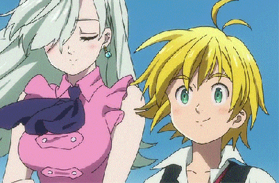
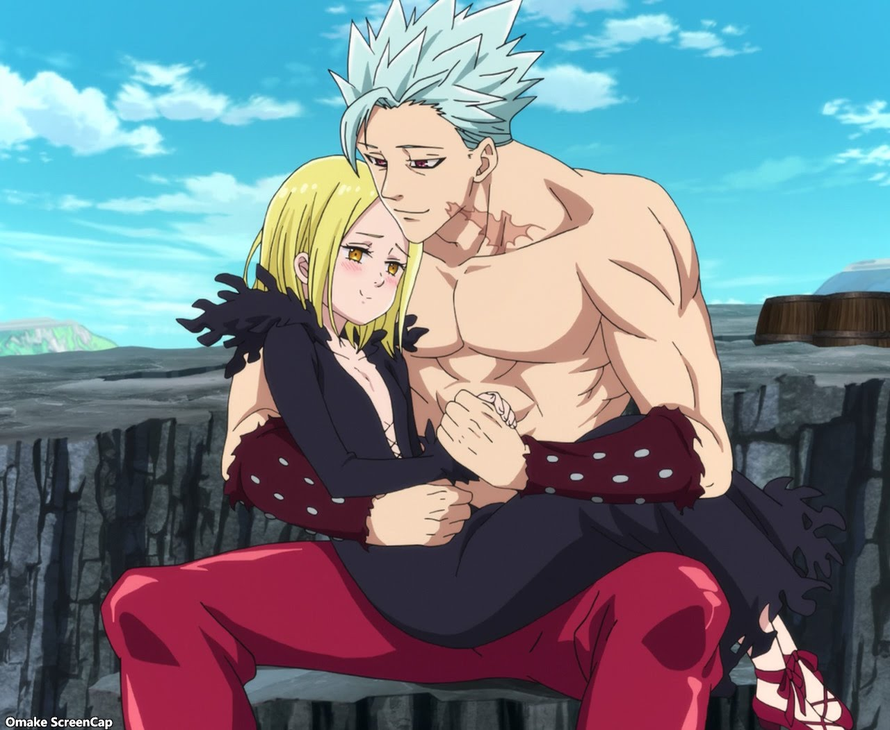
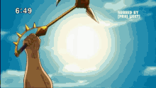
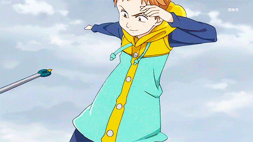
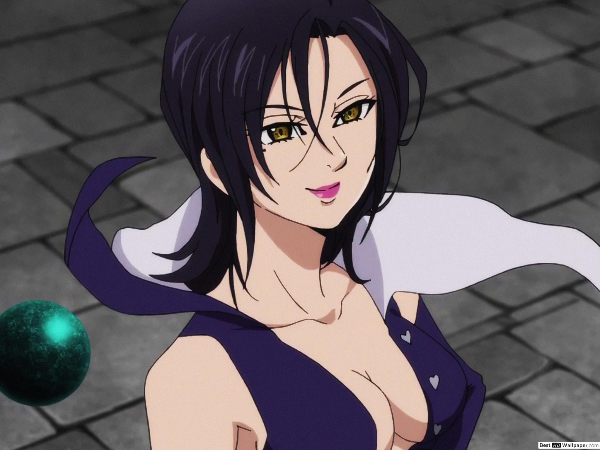
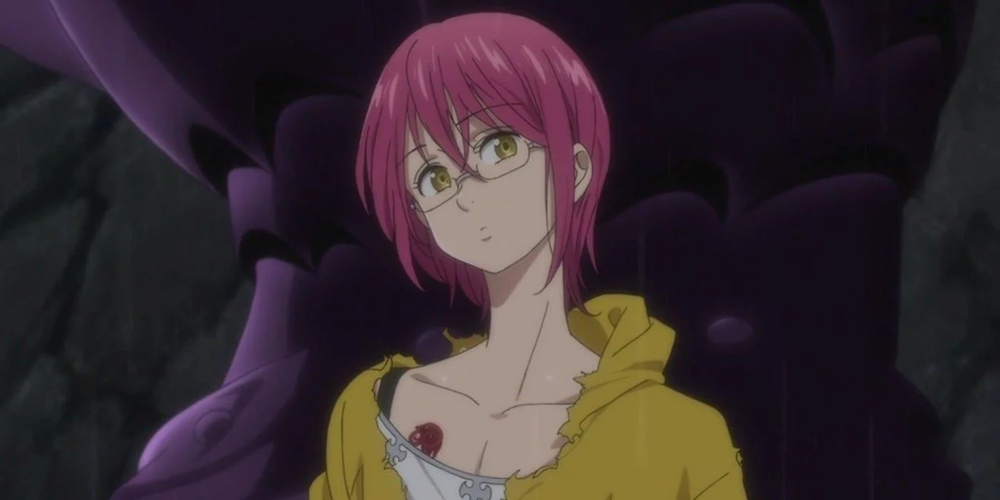
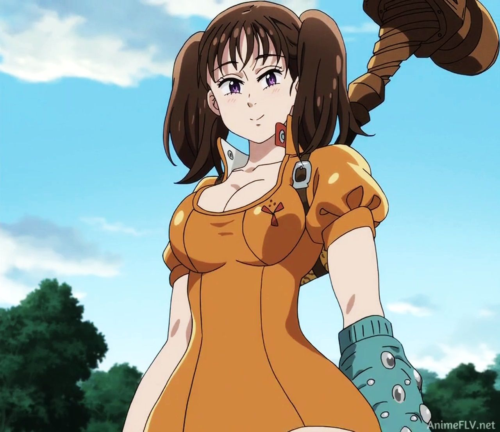

favorite favorite favorite

Elizabeth, on her journey, first finds Meliodas the Dragon sin, and the captain of the Seven Sins. He is my first favourite character :3

Ban, the Fox sin, is my second favourite. He can steal people's stregnth for his own use and make them very weak. Elaine is his girlfriend, and they make a beautiful couple.

Escanor, the Lion sin, has a very interesting power that peaks at noon, and at night is totally powerless. Easily the second strongest, next to Meliodas.

Harlequin, the Grizzly sin, is king of the Fairy race and Elaine's big brother. His Spirit Spear is very powerful, and only the Fairy Kings receive them.

Merlin is the Boar sin, and she may not be physically strong but her magic is the very best!

Gowther the Goat sin has a power called Invasion, where he can actually alter people's memories. He is very smart, though emotionless majority of the time.

Diane is the Serpent sin, and also of the Giant race. As a Giant, she can manipulate the earth any way she wants!